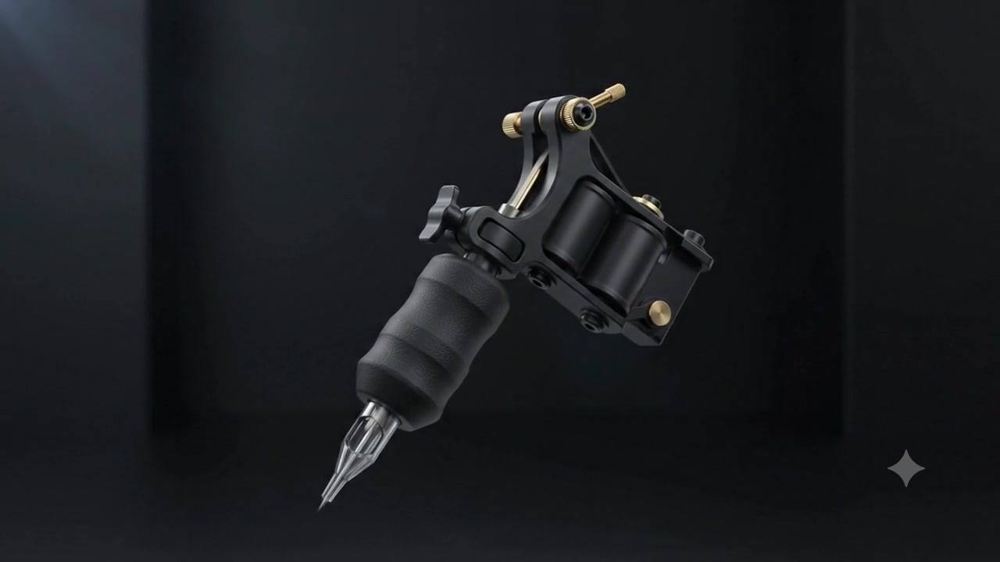
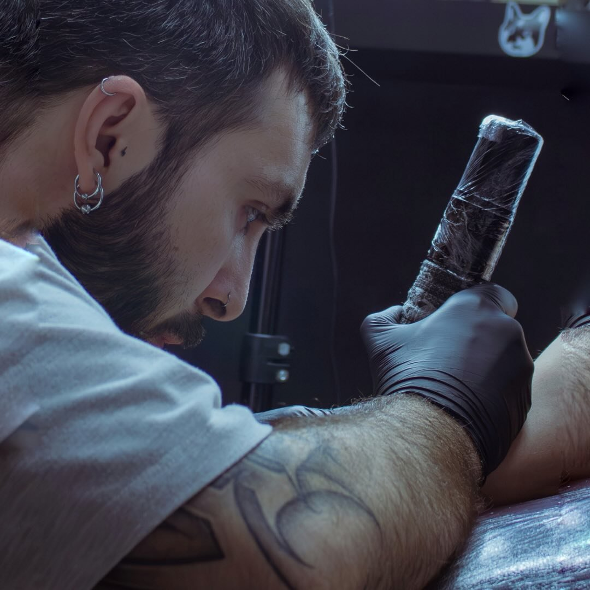
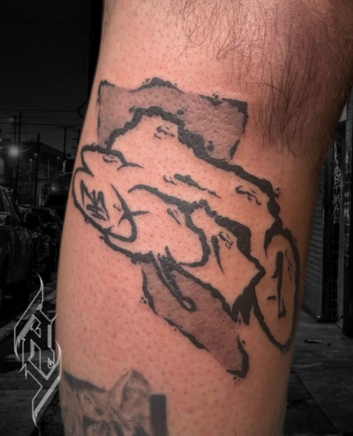
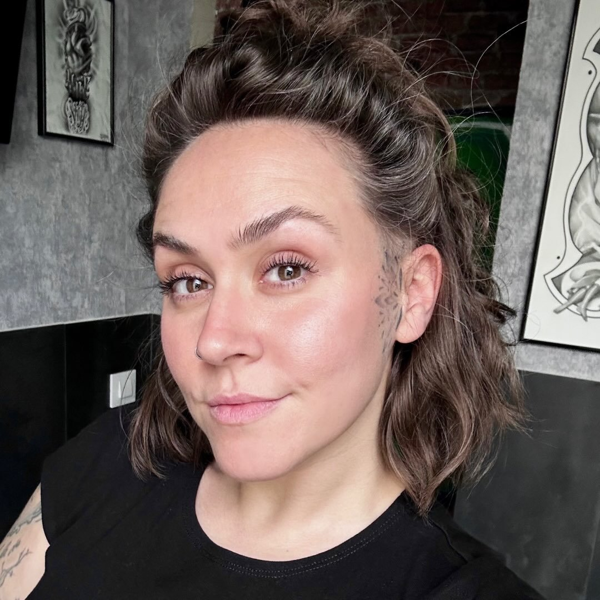

Diseño contigo
Partimos de tu referencia para crear algo propio que funcione en la zona y tamaño elegidos.
Diseño propio, línea sólida y trato directo. Vienes con una idea; sales con una pieza hecha para tu cuerpo, no para un tablero de Pinterest.
Leganés · Madrid
Higiene, técnica y seguimiento de curación
Reserva directa por WhatsApp
Una selección del estudio: negro sólido, detalle fino y micropigmentación. Pulsa una pieza para verla de cerca.
9 trabajos disponibles

La piel recuerdalo que el tiempo no borra.

AdriánPropietario · TatuadorRealismo ilustrativo, Black & Grey, fauna y mitología, con color selectivo. 02
DaniTatuador principal · ResidenteColor, efecto 3D, cover-ups y proyectos grandes. Paciencia y calma para primeros tatuajes. 03YeraTatuadora · ArtistaDetalle, creatividad y alternativas originales adaptadas a lo que quieres. 04RequeTatuador · Black & GreyRealismo, composiciones narrativas y referencias de cómic y cine. 05
MetxTatuadora · IlustrativoLínea negra, blackwork y color selectivo en composiciones gráficas. 06NurPiercer · Body artistPiercing, joyería dental y micropigmentación con precisión y detalle.Clientes del estudio destacan el trato cercano, la calma durante el proceso y el cuidado del espacio.
Google Ver reseñas“Te hacen sentir entre amigos.”
“Mucha calma y cero prisas en el diseño.”
“Un local impecable, con buen flow y energía.”
Te explicamos qué va a pasar antes de empezar, trabajamos con material preparado para cada sesión y te llevas pautas claras para cuidar la pieza.
Partimos de tu referencia para crear algo propio que funcione en la zona y tamaño elegidos.
Preparación limpia, material de un solo uso cuando corresponde y proceso explicado sin letra pequeña.
Sales sabiendo qué hacer, qué evitar y cuándo consultarnos si algo no te cuadra.
Cuatro pasos cortos. Al terminar, abrimos WhatsApp con el briefing listo para enviar. Sin registro y sin perder tu idea por el camino.